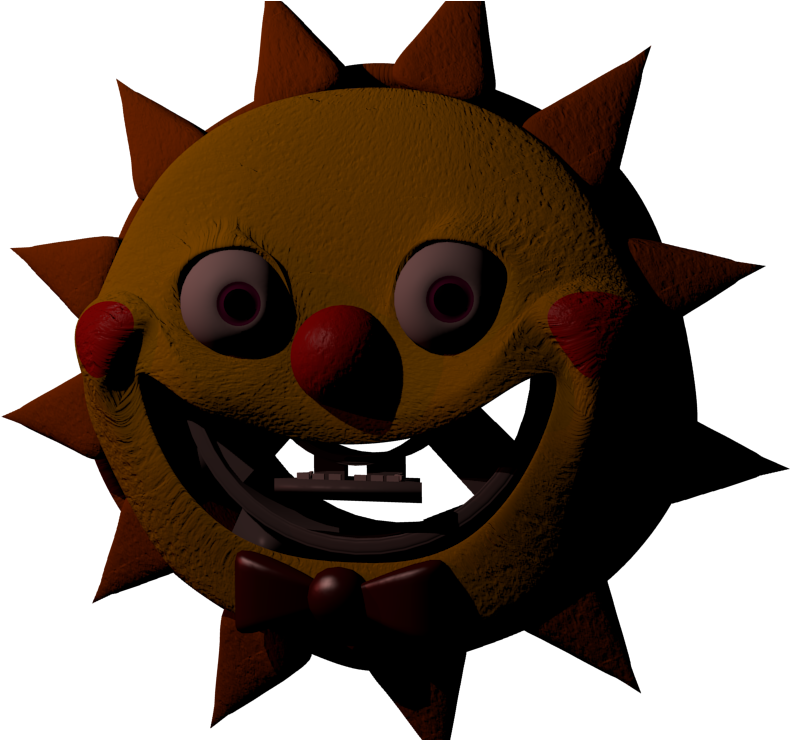

  
  <style media="screen">

    img{
      max-width: 100%;
      max-height:100px;
      animation-name: passage;
      animation-duration: 12s;
      animation-iteration-count: infinite;
      animation-timing-function: linear;
      animation-fill-mode: forwards;
      animation-delay: 0s;
    }
    @keyframes passage{
      0% {transform: translate(-100px, 150px)}
      20%{transform: translate(140px, 75px)}
      40%{transform: translate(380px, 0px)}
      60%{transform: translate(695px, 0px)}
      80%{transform: translate(940px, 75px)}
      100%{transform: translate(1200px, 150px)}


    }
  </style>
